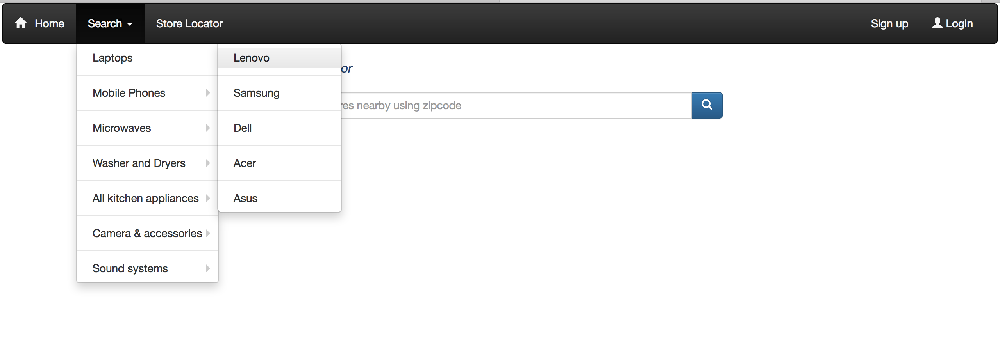
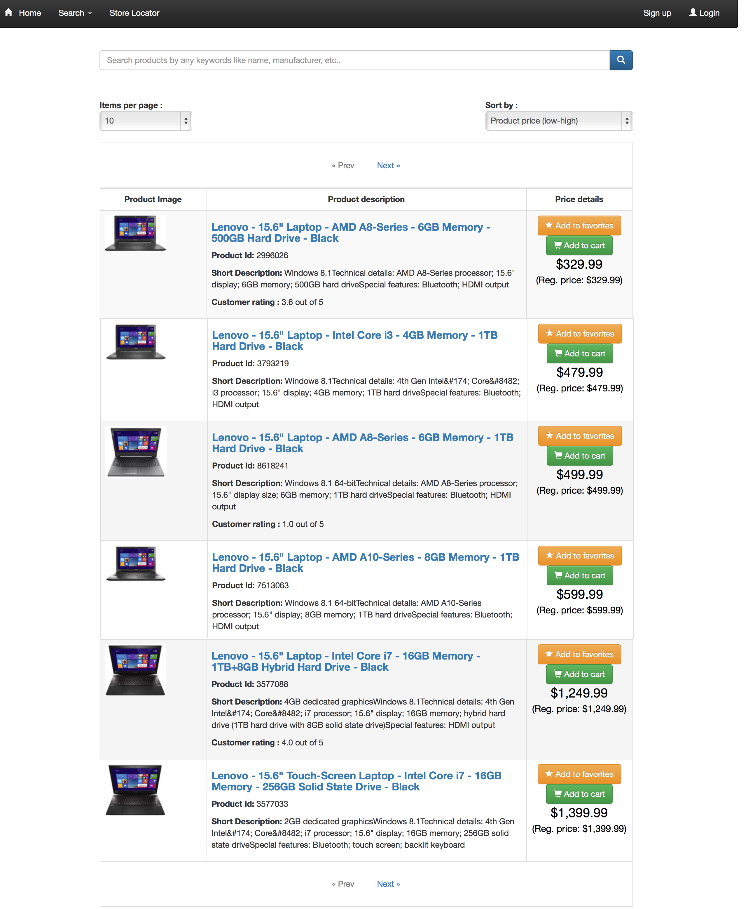

Search page
The search menu on the home page helps user to browse through different products based on their type and manufacturer. The search
menu when expanded will look like the following :

Search page in detail :
When the user clicks 'Search' link on the home menu, it will expand showing different products types categorized based on their
manufacturer name. On clicking the manufacturer name, the search result for the particular product type from the selected manufacturer
will be displayed. For example, when user selects Laptops->Lenovo, the result will be displayed as follows:

Search page options explained :
Every product listed in search page can be bookmarked (Added to favorites) or added to cart. But to do either of these actions,
the user has to login. Also the products can be sorted based on price(low to high & high to low) and name. The user can limit
the number of records to be shown on the page by modifying 'Iems per page' value. By default items per page is 10. There is also
pagination link available, which can be used to navigate to the next/prev page if the number of products returned is more than 10.
Technologies used :
- HTML5
- CSS3
- Bootstrap
- AngularJS